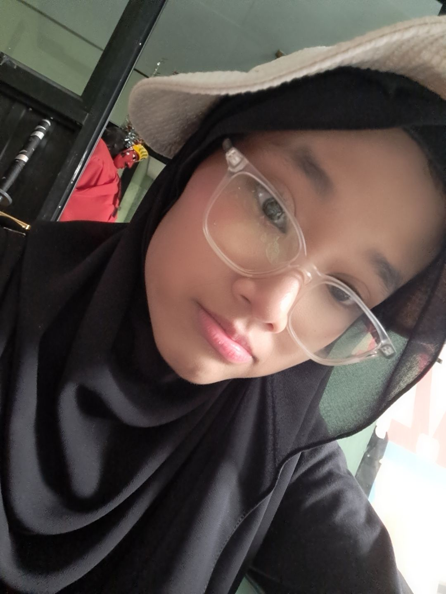

<html>
<title> Sharliz's Page 2</title>
<body style="background-image: url('aot.jpg');
             background-size: cover;
             background-repeat: no-repeat;
             background-attachment: fixed;">
</body>
<marquee><font color=white><h2>
Biodata Sharliz
</h2></body>
</marquee>
<body><h1>
<font color=white><CENTER>
<p> Biodata
<br></p>

<h6 style="text-shadow: 2px 2px 5px black;">Nama: Sharliz Falisha Pribadi</h1>
<h6 style="text-shadow: 2px 2px 5px black;">Kelas: XII A2 2</h1>
<h6 style="text-shadow: 2px 2px 5px black;">Tanggal lahir: Jakarta, 7 Desember 2008</h1>
<h6 style="text-shadow: 2px 2px 5px black;">Alamat: Bekasi Jaya Indah</h1>
<h6 style="text-shadow: 2px 2px 5px black;">Jenis Kelamin: Perempuan</h1>
<h6 style="text-shadow: 2px 2px 5px black;">Instagram: not.shar_</h1>
<h6 style="text-shadow: 2px 2px 5px black;">ID Line: shrlyvs</h1>
<style>
  .menu {
    background-color: rgba(0,0,0,0.6);
    padding: 8px 15px;
    display: inline-block; 
    border-radius: 8px;    
  }
  .menu a {
    color: white;             
    text-decoration: none;    
    margin: 0 8px;
  }
  .menu a:hover {
    color: lightblue;            
  }
</style>

<center>
  <h5 class="menu">
    <a href="index.html">Home  |</a>
    <a href="hobi.html">Hobi  |</a>
    <a href="galeri.html">Galeri  |</a>
  </h5>
</center>
</body>

</html>
